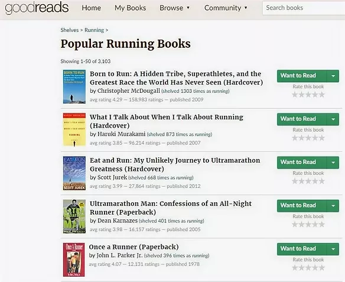
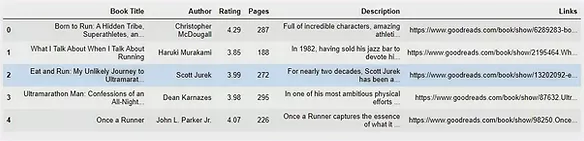

Web Scraping Goodreads with BeautifulSoup: Popular runnning books
Data is incredibly important to every analyst or data scientist. Web scraping is a valuable skill that allows us to access the limitless sources of data online. In my previous blogpost, I have documented the use of R to scrape football data from a wikipedia page. This post presents my attempt on scraping information of popular running books from Goodreads using Python programming language.
Required Tools
import requests
from bs4 import BeautifulSoup
from urllib.parse import urljoin
import pandas as pdWe will require four library packages for this project. The request package helps with making HTTP requests from the website of interest. The BeautifulSoup package is a popular web scrapping python library and this helps us to perform the main work. The urllib.parse helps us to join URL addresses and the pandas library helps us to tidy the data scraped into a nice data frame.
Website
This page on Goodreads presents the top 50 books related to running (see below). It showcases some information of each book such as the title, author names and ratings. However, if you want to read more detailed description of each book, you will have to click on the link of the book title.

Set up
If you right click on most web pages, you may inspect its html codes. The codes are structured with several tags, classes and attributes that serve different purposes. Generally, web scraping locates the data that you are interested to extract based on information from these codes. The codes below help us to extract the website’s html and also create a BeautifulSoup object that we will further wrangle with. You may also examine the html file exported.
# Specifying website url
base_site = "https://www.goodreads.com/shelf/show/running"
# Make http request
response = requests.get(base_site)
# Get the html from webpage
html = response.content
# Creating a BeautifulSoup object with the use of a parser
soup = BeautifulSoup(html, "lxml")
# Exporting html file
with open('popularrunningbooks.html', 'wb') as file:
file.write(soup.prettify('utf-8'))The aim of this web scraping project was to extract relevant information regarding each of these 50 books: 1) book title, 2) author name(s), 3) book rating, 4) book pages, 5) book description. The general workflow to retrieve these information follows the same steps as if we were to manually do it. This involves us clicking on each of the book links and extract the data of interest. Hence, the very first step to help us automate this process is to extract this list of book links from the BeautifulSoup object we created earlier.
Html codes are generally built within many layers, similar to putting a present in several layers of gift boxes. Therefore, scraping data is akin to unwrapping the present layer by layer. Typically, a website’s content is hidden under the ‘div’ tag, which represents the outermost layer of the box. Hence, this is usually the starting point to unwrap our “present”. We could also specify the class and ID to help us better locate the data that we want. In this case, the book links are within the class “elementList”.
# First layer: The element that contains all the data
divs = soup.find_all("div", {"class": "elementList"})
# Second layer: Extracting html tags that contain the links
links = [div.find('a') for div in divs]The url information of each book links are located in the links. However, each of the url extracted is only a partial web address. For example, the corresponding partial url link for the book “Born to Run” looks like ‘/book/show/6289283-born-to-run’. In order to get the full url, we will use the urljoin method from the urllib.parse package to join our base site web address with each of these partial url links.
# Extracting the partial links
relative_url = [link['href'] for link in links]
# Computing the full url addresses
full_url = [urljoin(base_site, relativeurl) for relativeurl in relative_url]If you inspect the full_url list , some unnecessary non-book links were accidentally extracted as well. Hence, the code below will help to overcome this problem.
# Filter only the book links
book_url = [url for url in full_url if "https://www.goodreads.com/book/show" in url]Scraping information of each book
Finally, we have arrived at the main web scraping work. Imagine clicking on each of the book links and retrieve the data we need. Programming helps us to automate this process. First, we create five empty lists, whereby each list will store its respective information.
book_description = []
book_author = []
book_title = []
book_rating = []
book_pages = []The scraping process involves some similar steps stated earlier, whereby we have to retrieve the html code of each book link and locate the information we need. The same steps will be repeated for every link. The for-loop below helps us to perform this repetitive work.
#creating a loop counter
i = 0
#Loop through all 50 books
for url in book_url:
#connect to url page
note_resp = requests.get(url)
#checking if the request is successful
if note_resp.status_code == 200:
print("URL{}: {}".format(i+1, url))
else:
print('Status code{}: Skipping URL #{}: {}'.format(note_resp.status_code, i+1, url))
i = i+1
continue
#get HTML from url page
note_html = note_resp.content
#create beautifulsoup object for url page
note_soup = BeautifulSoup(note_html, 'html.parser')
#Extract Author particulars
author_divs = note_soup.find_all("div",{"class":"authorName__container"})
author_text = author_divs[0].find_all('a')[0].text
book_author.append(author_text)
#Extract title particulars
title_divs = note_soup.find_all("div", {"class": "last col"})
title_text = title_divs[0].find_all('h1')[0].text
book_title.append(title_text)
#Extract rating particulars
rating_divs = note_soup.find_all("div", {"class": "uitext stacked", "id": "bookMeta"})
rating_text = rating_divs[0].find_all("span", {"itemprop": "ratingValue"})[0].text
book_rating.append(rating_text)
#Extracting page particulars
page_divs = note_soup.find_all("div", {"class": "row"})
try:
page_text = page_divs[0].find_all("span", {"itemprop": "numberOfPages"})[0].text.strip('pages')
except IndexError:
page_text = 0
book_pages.append(page_text)
#Extracting description particulars
description_divs = note_soup.find_all("div", {"class": "readable stacked", "id": "description"})
try:
description_text = description_divs[0].find_all("span")[1].text
except IndexError:
try:
description_text = description_divs[0].find_all("span")[0].text
except IndexError:
description_text = "Nil"
book_description.append(description_text)
#Incremeting the loop counter
i = i+1It will take a couple of minutes to scrape through all 50 links. Most of the raw data look messy, and hence require some cleaning up. After some tidying, we can use the pandas package to organise all the data into a data frame (see below).

You may also sort the data frame based on its ratings using the sort_values method. That will inform us that the highest rated book is “The Rise of the Ultra Runners: A Journey to the Edge of Human Endurance” by Adharanand Finn with an average 4.45 rating. Finally, we can export all these data into a nice csv file for ease of viewing on Excel, using the to_csv method.
# Export dataframe into csv file
sorted_book_df.to_csv("top running books.csv")Hope you enjoy this blog post and full code can be found here. Similar codes can be used to scrape other book lists on Goodreads. For my running friends, you may check out the final csv file over here.